Publication
Dishita Turakhia, Andrew Wong, Yini Qi, Lotta-Gili Blumberg, Yoonji Kim, Stefanie Mueller.
Adapt2Learn: A Toolkit for Configuring the Learning Algorithm for Adaptive Physical Tools for Motor-Skill Learning
In Proceedings of
Designing Interactive Systems ’21.
DOI PDF Video Video
DOI PDF Video Video
1 / 44

2 / 44

3 / 44

4 / 44

5 / 44

6 / 44

7 / 44

8 / 44

9 / 44

10 / 44

11 / 44

12 / 44

13 / 44

14 / 44

15 / 44

16 / 44

17 / 44

18 / 44

19 / 44

20 / 44

21 / 44

22 / 44

23 / 44

24 / 44

25 / 44

26 / 44

27 / 44

28 / 44

29 / 44

30 / 44

31 / 44

32 / 44

33 / 44

34 / 44

35 / 44

36 / 44

37 / 44

38 / 44

39 / 44

40 / 44

41 / 44

42 / 44

43 / 44

44 / 44

Adapt2Learn: A Toolkit for Configuring the Learning Algorithm for Adaptive Physical Tools for Motor-Skill Learning
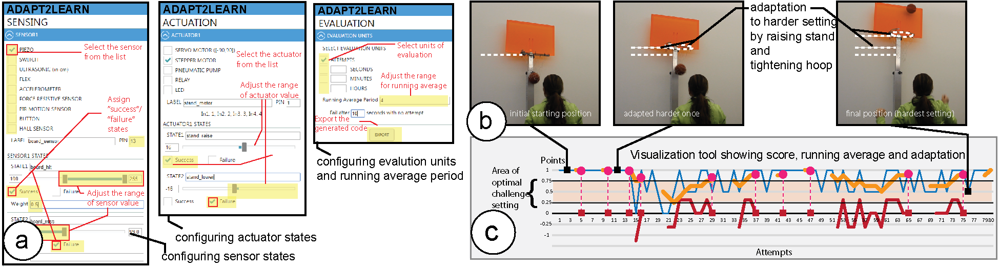
Figure 1. (a) Designers use Adapt2Learn's user interface to configure the adaptation of their adaptive training tools, such as (b) an adaptive basketball stand that adapts its hoop height and width. Adapt2Learn auto-generates the learning algorithm as a micro-controller script that can be deployed to the tool. The algorithm uses sensor values to assess a learner's performance, computes the optimal training difficulty, and varies the training difficulty by adapting the hoop height and width. (c) Adapt2Learn's built-in visualization tool lets designers visualize their tool's adaptation and evaluate the learning algorithm.
Recent study on motor-skill training suggests that adaptive training tools that use shape-change to adapt the training difficulty based on learners' performance can lead to higher learning gains. However, to date, no support tools exist to help designers create adaptive learning tools. Our formative study shows that developing the adaptive learning algorithm poses a particular challenge.
To address this, we built Adapt2Learn, a toolkit that auto-generates the learning algorithm for adaptive tools. Designers choose their tool's sensors and actuators, Adapt2Learn then configures the learning algorithm and generates a microcontroller script that designers can deploy on the tool. Once uploaded, the script assesses the learner's performance via the sensors, computes the training difficulty, and actuates the tool to adapt the difficulty. Adapt2Learn's visualization tool then lets designers visualize their tool's adaptation and evaluate the learning algorithm. To validate that Adapt2Learn can generate adaptation algorithms for different tools, we build several application examples that demonstrate successful deployment.
Introduction
Recent study on motor skill training suggests that training with physical tools that adapt their shape based on a learner's performance to maintain optimal task difficulty can lead to higher learning gains. Such adaptive training tools make personalized training accessible to a broader audience and expand the design space of training tools for motor skills. However, research on supporting designers in creating such adaptive training tools that adjust training difficulty is limited.
To study the challenges in creating adaptive training tools, we conducted an 8-week formative study with 32 participants in a bi-weekly studio format. The participants built adaptive training tools for various motor skills, such as skating and swimming, in teams of two (Figure 2). Each tool used actuation to vary the training difficulty so that the learner can progress from a beginner level to an expert level. Our observations and participants' feedback indicated that they struggled the most with developing a learning algorithm for their adaptive training tools. In particular, developing an algorithm that varied task difficulty through actuation to ensure training at the optimal difficulty level was challenging.
To determine when to adapt the study prototype in the auto-adaptive training condition, we use an adaptation algorithm that maintains the training difficulty at the optimal challenge point, at which the task is neither too difficult nor too easy for the users. Studies in motor skill learning have shown that when coaches train learners at the optimal challenge point, learners have the maximum potential learning benefit. To maintain the difficulty level at the optimal challenge point, the algorithm measures a users' performance and based on the performance over time, determines whether the tool should adapt to a more difficult setting, a less difficult setting, or remain at the current difficulty setting during the training.
According to the literature in motor skill learning, an effective learning algorithm maintains the learner's training difficulty level at the optimal challenge point, i.e., when the difficulty level is neither too difficult nor too easy for the learner's skill levels. While the recent study in HCI has demonstrated how to develop such an algorithm for adaptive training tools, no system exists to support designers in configuring it for their specific adaptive training tools.
To address this challenge, we built Adapt2Learn, a toolkit that auto-generates the adaptive learning algorithm for designers' adaptive training tools for motor skill learning. Adapt2Learn has a user interface that allows designers to configure the adaptation of their tools by setting the sensors' and actuators' values. Adapt2Learn then auto-generates the adaptive learning algorithm and exports it as a microcontroller script that designers can deploy onto their tools. The script actuates the tool's shape to maintain optimal task difficulty based on the performance sensed during training.
Additionally, Adapt2Learn has a built-in visualization tool that helps designers evaluate if their training tool is adapting appropriately and maintaining the learners' training difficulty level at the optimal challenge point during training. The visualization displays a learner's performance and shows when the tool adapts to an easier or a more difficult setting. The designers can then use the insights from this visualization to further fine-tune the algorithm.
In summary, we contribute:
- A formative study that highlights the need to support designers in configuring a learning algorithm for their adaptive training tools for motor skills.
- A toolkit that supports designers in configuring a learning algorithm for their adaptive training tools. The toolkit has two parts - (1) a user interface to configure sensor and actuator values and to export a microcontroller script, and (2) a visualization tool to evaluate the adaptation during training to fine-tune the algorithm.
- Applications to demonstrate that Adapt2Learn can create learning algorithms for a range of adaptive training tools, such as an adaptive arm-band for golf, adaptive wobbleboard, adaptive bike, and adaptive heels.
FORMATIVE STUDY
Study Design
To study the challenges that designers face in building adaptive training tools that train learners at the optimal challenge point, we conducted a formative study. Our formative study was an 8-weeks long bi-weekly design studio as part of an undergraduate course at our institution. We had 32 participants who were in their junior or senior year at the university, and all had prior knowledge of electronics, prototyping, and programming (at least 2 years). The participants were teamed up in groups of two.
We asked the teams to design, prototype, and build an adaptive training tool for a motor skill of their choice. In the first week, the participants brainstormed 10 ideas each and then selected one idea per team to work on for the rest of the studio. Letting the teams choose the motor skill themselves allowed us to examine the design space of adaptive training tools for various motor skills and understand the most common challenges in building them.
During the 8-weeks study period, we informally interacted with the teams to discuss their design concepts, prototype implementation, and the algorithm development for their adaptive tools. The teams presented their progress and discussed the challenges with us during the studio. At the end of the 8-week design studio, we conducted semi-structured interviews to gain further insights by surveying 8 volunteering participants representing 7 teams, with two participants from the same team.
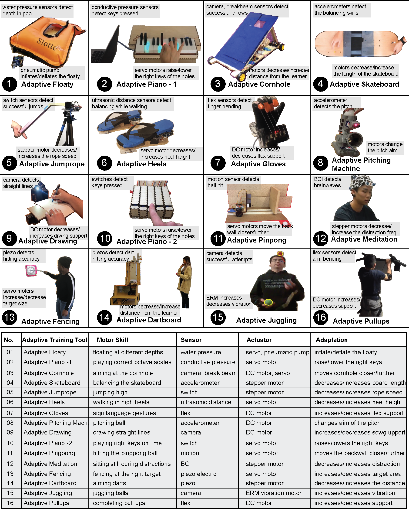
Figure 2. Formative study: (top) The 32 participant teams built adaptive training tools for various motor skills of their choice. While the teams successfully prototyped the adaptive training tools, study observations showed they struggled the most with developing a learning algorithm for their adaptive training tools. (bottom) List of the sensors, actuators, and their corresponding adaptation used in the adaptive training tools.
Challenges Identified
We found that the designers faced challenges in three areas - choosing the sensors and actuators, prototyping the hardware, and configuring the learning algorithm for their adaptive training tools. The first challenge can be addressed by using the 4 guiding questions outlined in the design concept section. For the second challenge, several support tools already exist that help designers integrate their mechanisms into their tools, as listed in the related work. However, there is no support for designers to configure a learning algorithm that maintains the optimal challenge point during training. In particular, the designers faced two challenges concerning the learning algorithm:
- configuring a learning algorithm for their respective adaptive training tool that varies the task difficulty and maintains it at the optimal challenge point
- evaluating the learning algorithm and the tool's adaptation
ADAPT2LEARN TOOLKIT - WALKTHROUGH
We now demonstrate how to use the Adapt2Learn user interface for configuring the learning algorithm for adaptive training tools described in the previous section. We then explain how Adapt2Learn's built-in visualization tool helps designers assess when the tool adapts and how it affects the learner's performance. As an example, we replicated the adaptive basketball from Turakhia et al.
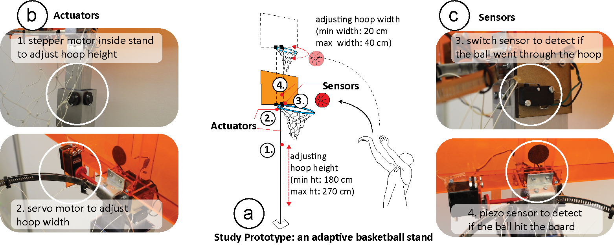
Figure 3. Study Prototype: (a) Our basketball stand with adjustable hoop height (min height: 180 cm, max height: 270 cm) and hoop width (min width: 20cm, max width: 40cm) is mounted with (b) actuators, i.e. a stepper and a servo motor for adaptation, and (c) sensors, i.e. a switch and a piezo sensor to detect if the ball went through the hoop or hit the board.
Configuring the Learning Algorithm using Adapt2Learn's User Interface:
To configure the learning algorithm, designers first register the sensors and then map the sensor values to success/failure states. They then repeat the process for actuators by registering the actuators and mapping the actuator values to success/failure states. Finally, they define how the performance should be evaluated by defining the evaluation unit and running average period. We next detail these steps for the example of the adaptive basketball stand.
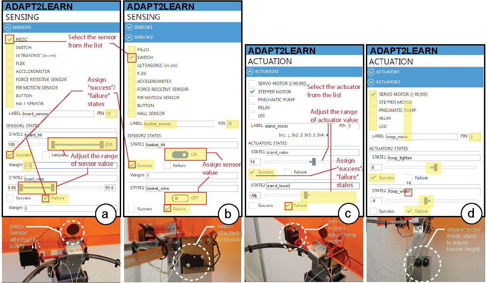
Figure 4. Configuring the learning algorithm using Adapt2Learn's user interface by registering sensors and mapping sensor values onto success/failure states and corresponding scores.
Step 1: Register Sensors:
We start by hitting the 'create new adaptive tool' button and proceed to register the sensors. In the user interface, we can select among a range of different sensors, such as piezo, switch, ultrasonic, flex, accelerometer, force resistive, PIR motion, and hall sensors. For our purposes, we select the 'piezo' sensor, label it 'board_sensor', and assign it pin 13 on our microcontroller (Figure 4a). We use the 'add another sensor' button and repeat the procedure. We select the 'switch' from the available sensors and label it as 'basket_sensor' and assign it pin 10 on our microcontroller (Figure 4b).
Step 2: Map Sensor Values onto Success/Failure States:
Next, we configure the sensor states and the respective threshold values that define successful and unsuccessful performance. Depending on the sensors chosen, the user interface provides the respective range of sensor values. For example, for the piezo sensor, the user interface provides a range of values (0-255) whereas for the switch sensor, it provides only boolean values.
Step 3: Register Actuators:
Next, we register the actuators. In the user interface, we can select among a range of different actuators, such as a servo motor, stepper motor, pneumatic pump, and relay. Depending on the actuators chosen, the user interface provides the respective range of actuator values. For our purposes of raising and lowering the hoop height, we select 'stepper motor' from the list of actuators and label it 'stand_motor'. We assign it pin 1 on our microcontroller, and the user interface automatically assigns the remaining pins 2, 3, and 4 required for the stepper motor (Figure 4c). We then add the motor that widens and tightens the hoop by clicking 'add another actuator' button. We then select 'servo motor' and label it 'hoop_motor', and then assign it pin 9 on the microcontroller (Figure 4d).
Step 4: Map Actuation Values onto Success/Failure States:
Next, we map the motors' actuation values onto adaptation states. We define states for the 'stand_motor' (stepper motor): 'stand\_raise' as 'success' and with the motor turning 16 revolutions to increase the hoop height, and 'stand_lower' as 'failure' and with the motor turning -16 revolutions to decrease the hoop height (Figure 4c). We repeat the process for the hoop motor by defining 'hoop_motor' (servo motor): 'hoop_tighten' as 'success' with the motor turning 8 revolutions, and 'hoop_widen' as 'failure' with the motor turning -8 revolutions (Figure 4d).
Step 5: Define Performance Evaluation Unit and Running Average Period:
Finally, we set up the performance evaluation unit (Figure 5a). The 'evaluation unit' can be either 'attempts' or 'time'. For our adaptive basketball prototype, we select 'attempts' representing attempted throws at the basket. Next, we define the 'running average period', i.e. the period over which the algorithm will evaluate the learner's performance. Depending on which evaluation unit was selected, the running average period is either a number of attempts (after 4 throws in our basketball example) or a time period (after 10 minutes in balancing a bike). We also set the time limit after which, if no sensor value is detected, the attempt is considered as a failure, for example as 10 seconds.
Generating the Microcontroller Script According to the Configuration:
After configuring the learning algorithm using the steps described above, designers can hit the 'export' button, which automatically generates the microcontroller code (Arduino script in .ino file format). After exporting, designers can then deploy the script onto the microcontroller integrated with their adaptive training tools.
Visualization Tool: Displaying Performance and Adaptation:
To provide tool designers with a way to assess the learner's performance and when the tool adapts, we added a visualization tool. The visualization tool plots the learner's attempt scores, the corresponding running average, and the computed derivative of the running average at that attempt. This performance data is plotted in real-time along with when the tool adapts to an easier or more difficult setting.
The visualization helps monitor how the configured learning algorithm takes a learner from a low difficulty setting to a high difficulty setting while maintaining their performance score at the optimal challenge point.
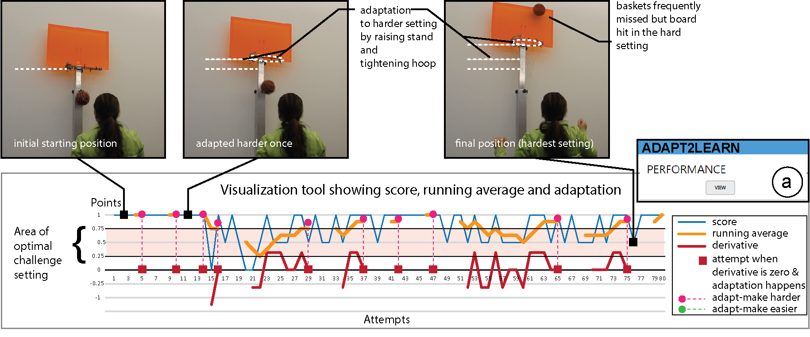
Figure 5. Visualization of the scoring of a learner and the adaptation frequency over a number of attempts. The visualization thus helps monitor how the configured learning algorithm takes a learner from a low difficulty setting to a high difficulty setting while maintaining their performance score at the optimal challenge point.
APPLICATION EXAMPLES OF ADAPTIVE LEARNING TOOLS USING ADAPT2LEARN
We built and configured an adaptive armband that supports learners in keeping their elbow straight during the golf-swing. The armband has a flex sensor to detect if the learner's elbow is straight or bent, and a pneumatic pump to deflate and inflate the arm band to restrict bending of the elbow
Adaptive Armband for Golf: Single Sensor-Actuator Combination
We built and configured an adaptive armband that supports learners in keeping their elbow straight during the golf-swing. The armband has a flex sensor to detect if the learner's elbow is straight or bent, and a pneumatic pump to deflate and inflate the arm band to restrict bending of the elbow (Figure~\ref{fig:golf}).
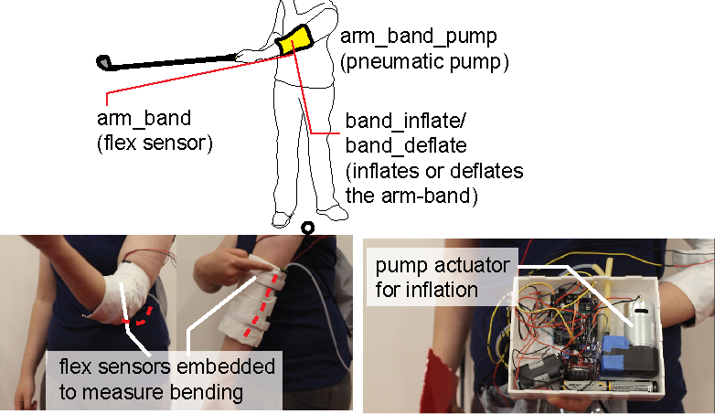 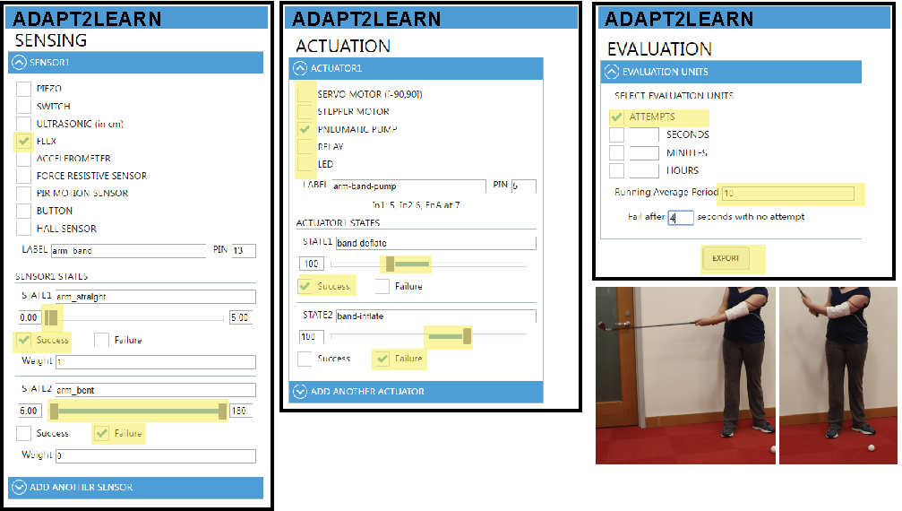
Figure 6. An adaptive armband that supports learners in keeping their elbow straight during the golf-swing, integrated with one flex sensor and one pneumatic pump. Configuring the learning algorithm for the armband using \textit{Adapt2Learn}'s user interface.
The configured algorithm then senses the bending and inflates or deflates the armband to provide more or less support to the learner and thus varies the task difficulty. For example, if the learner bends the elbow too often during training, the algorithm makes the task difficulty easier by inflating the armband thereby restricting the bending, and thus providing more support to the learner by keeping the elbow straight.
Adaptive Wobbleboard: Synchronizing Sensors:
We built and configured an adaptive wobbleboard with inflatable cushion that supports learners in learning to balance the board. The wobbleboard has two ultrasonic sensors mounted on diametrically opposite sides of the board to detect if it is stable or wobbling, and a pneumatic pump to deflate and inflate the support cushion that restricts wobbling (Figure~\ref{fig:adapt2learnwobble}).
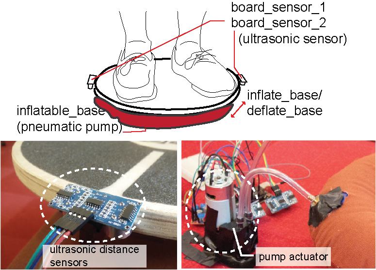 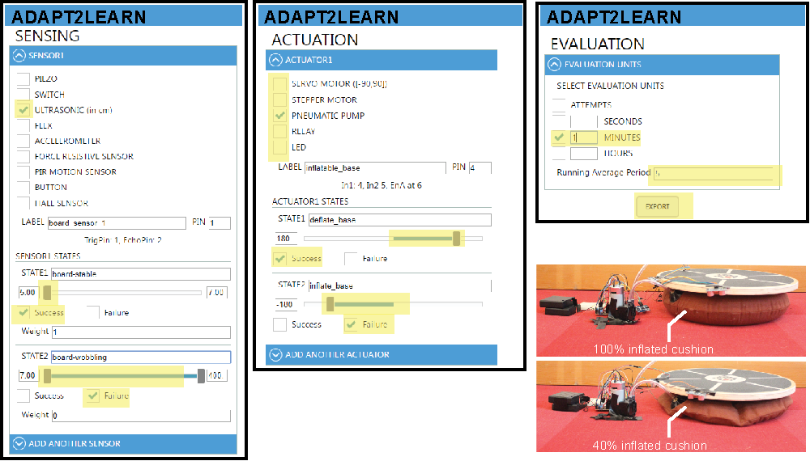
Figure 7. An adaptive wobbleboard with inflatable cushion that supports learners in learning to balance the board. Configuring the learning algorithm for the wobbleboard using \textit{Adapt2Learn}'s user interface to set synchronized two ultrasonic sensors and one pneumatic pump.
If the configured algorithm detects a failure state for either of the sensors, it implies that the corresponding edge of the wobbleboard is too high, and the other edge is too low (<5cm), meaning that the wobble board is imbalanced. Thus, two sensors can be used in tandem to detect balancing. To support the learner in keeping the wobbleboard balanced, the pneumatic pump can then inflate the cushion. Alternatively, if the learner balances the wobbleboard well, the pump deflates the cushion, thereby reducing the support and making the task of balancing harder.
Adaptive Bike: Synchronizing Actuators
We built and configured a bike with adaptive training wheels that supports learners in learning to balance the bike. The bike has one hall-effect sensor mounted on each of the training wheels to detect if the training wheel is being used, and one stepper motor on each of the training wheels to lower or raise them to provide more or less support in balancing the bike (Figure~\ref{fig:bike}).
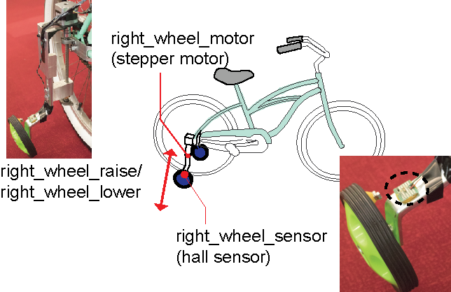 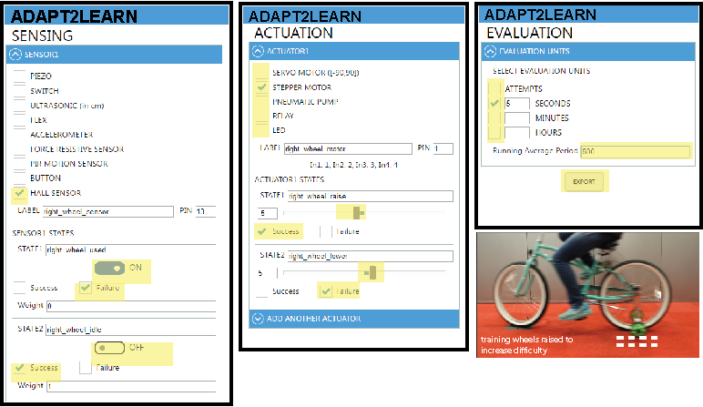
Figure 8. A bike with adaptive training wheels that supports learners in learning to balance the bike. Configuring the learning algorithm for the adaptive bike using \textit{Adapt2Learn}'s user interface to set two synchronized hall-effect sensors and two synchronized stepper motors.
If the configured algorithm detects a failure state too often for either of the sensors, it implies that the learner is unable to balance without the use of the training wheels. The stepper motors then lower the wheels further to provide more support to the learner. Since both the actuators are mapped to the same failure state, they both turn at the same time and by the same amount. In this way two sensor values can be mapped to two actuator values in combination.
Adaptive Heels: Synchronized Sensors and Actuators
In addition to the above examples, we also configured the learning algorithm for the studio-built adaptive heels that support learners in training to walk in high heels (Figure \ref{fig:heels}). The participant team mounted two ultrasonic distance sensors per shoe, one on each side of the heel to measure the balance of the learner while walking in the heels. One servo motor was mounted on each of the shoe to raise and lower the heel height while walking. Thus, the adaptive heels had a combination of 4 synchronized sensors and 2 synchronized actuators. This ensures that both the heels were synchronized in their adaptation. Thus only when all the four sensor values detected success states, the servo motors actuated to raise the heels and increased the difficulty of walking. Note that the 3D printed spindle that increased and decreased its height by the servo motor at the base of the heel supported the weight of the learner while walking.
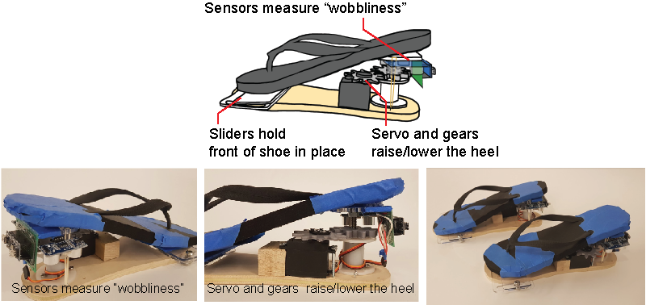 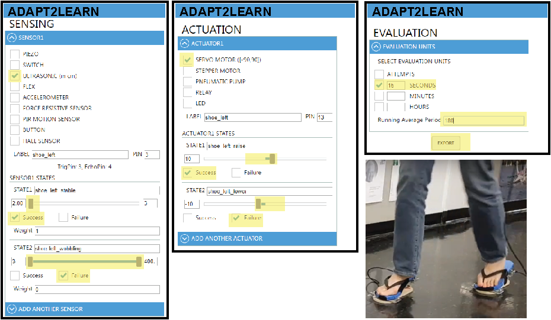
Figure 9. Adaptive heels that support learners in training to walk in high heels. Configuring the learning algorithm for the adaptive heels using \textit{Adapt2Learn}'s user interface to set four synchronized ultrasonic distance sensors (two per shoe), and two synchronized servo motors.
In the same way that we used our user interface to configure the examples above, the user interface can be used to configure other examples from the studio, such as the adaptive skateboard, dartboard, fencing, jumprope, and cornhole prototypes {(see Figure \ref{fig:classprojects})} that use similar sensor-actuator combinations.
However, we also encountered two challenges for which we could not yet configure the learning algorithm using our user interface. The first challenge occurs when the success state is coupled with a specific timing, such as when hitting a note on time for playing piano. For instance, the adaptive piano used a switch sensor to sense if a key was pressed at the right time and then actuated the servo motor under the key to provide feedback to the learner on which key to press next. Since our user interface does not support time-based sensing, we were not able to configure the learning algorithm for this adaptation. The second challenge occurs when additional processing on the sensor data is needed. For example, both the adaptive pitching machine and the adaptive juggling used a camera to detect the learner's position, which requires computer vision techniques that go beyond the sensor value thresholding that our user interface currently supports.
In summary, we demonstrated the use of \textit{Adapt2Learn} for configuring the learning algorithm for a variety of applications that ranged from single sensor-actuator combinations (e.g., golf-arm band) to multiple synchronized sensor-actuator combinations (e.g., adaptive heels).
DISCUSSION
We illustrated how \textit{Adapt2Learn} supports designers in configuring the learning algorithm for their custom adaptive training tools. \textit{Adapt2Learn's} built-in visualization tool then supports designers in assessing the learner's performance and the tool's adaptation. The interface also allows designers to update the learning algorithm without re-programming the microcontroller code. We next discuss the limitations of our toolkit and provide directions for future work:
Extending the Range of Supported Components: Adapt2Learn} currently supports 8 sensors and 4 actuators, which can be used in multiple sensor-actuator combinations, as seen in our examples. However, as discussed earlier, providing more components would further extend the range of adaptive tools for configuring the learning algorithm. For the future, we plan to integrate components that require more processing, such as depth sensors and cameras. Additionally, adding time-based sensing and custom components to the user interface could be a direction for future work.
Configuring the Algorithm in Real-time: While currently, our system provides real-time visualization of the learner's performance and tool's adaptation, it does not allow for real-time reconfiguration of the learning algorithm. The designers currently have to reconfigure the values, re-export the microcontroller script, and then deploy it again onto the adaptive tool. In future work, we plan to support designers to update the configuration of a learning algorithm in real-time in the learning situation.
Evaluating the toolkit through user studies: While we demonstrated that \textit{Adapt2Learn} can be used for configuring various adaptive training prototypes, evaluating the use of toolkit through user studies with designers and testing it in different phases of the design process is a part of our future work.
Visualizing the Learning Trajectory: While not the focus of our work, the visualization tool may also help assess how long the learner takes to transition from a low difficulty level to a high difficulty level, and predict the time needed to reach the highest skill level. Additionally, the visualization tool may also allow comparing the learning trajectory of multiple learners and gain more insights into that motor skill's learning.
Comparing Different Tool Designs: When building an adaptive training tool, designers have different options for sensing the learner's performance and adapting the task difficulty. For instance, when designing the adaptive basketball, instead of only detecting board and basket hits with a piezo sensor and switch, a camera can be used to sense the ball's trajectory, which provides more information. However, it is unclear which sensing-adapting method leads to the best results. Providing a way to compare the adaptation of different designs for the same training tool could allow designers to choose their designs appropriately.
Supporting Multiple Learners: Many skills involve learning as a group where individuals may have varying skill levels. While currently the exported microcontroller script from our user interface and our visualization tool monitor a single learner's performance, a future direction for research could be to extend both the user interface and the visualization tool to support multiple learners at the same time.
CONCLUSION
We developed a toolkit that supports designers in creating adaptive training tools that maintain the task difficulty at the optimal challenge point. Our formative study showed that designers needed support, particularly in configuring the learning algorithm and assessing the tool's adaptation. We showed that \textit{Adapt2Learn} addressed these two challenges through its user interface and its visualization tool. We showed that \textit{Adapt2Learn's} user interface supports configuring the learning algorithm by first registering the sensors and actuators of the adaptive tools, then mapping their values to success/failure states, and finally exporting the auto-generated micro-controller script, which can be deployed onto the micro-controller integrated with the tools. Furthermore, we showed how \textit{Adapt2Learn's} built-in visualization tool supports designers in assessing if the learning algorithm maintains the task difficulty at the optimal challenge point during training by visualizing the learner's performance and the tool's adaptation. We demonstrated \textit{Adapt2Learn's} use to configure the learning algorithm for five different adaptive tools with various sensor/actuator combinations, such as an adaptive basketball, armband for golf, wobbleboard, bike, and adaptive heels.
ACKNOWLEDGMENTS
We thank the 32 students at MIT, who took the 6.810 course and participated in the study. We thank Junyi Zhu for his help with the viztool. We also thank Or Oppenheimer and Christian De Weck for their contribution in building the prototypes. This work is supported by MIT Learning Initiative and the National Science Foundation under Grant No. 1844406.